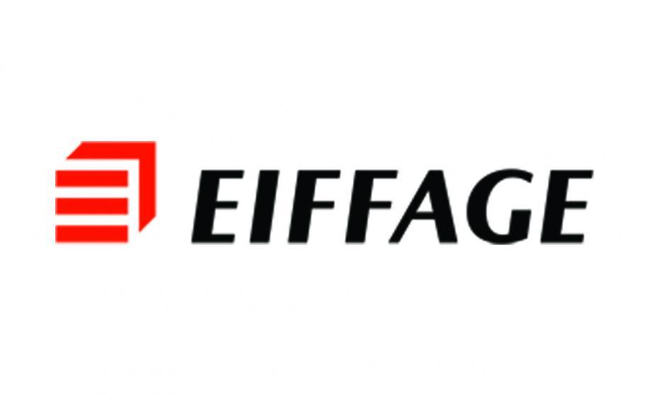
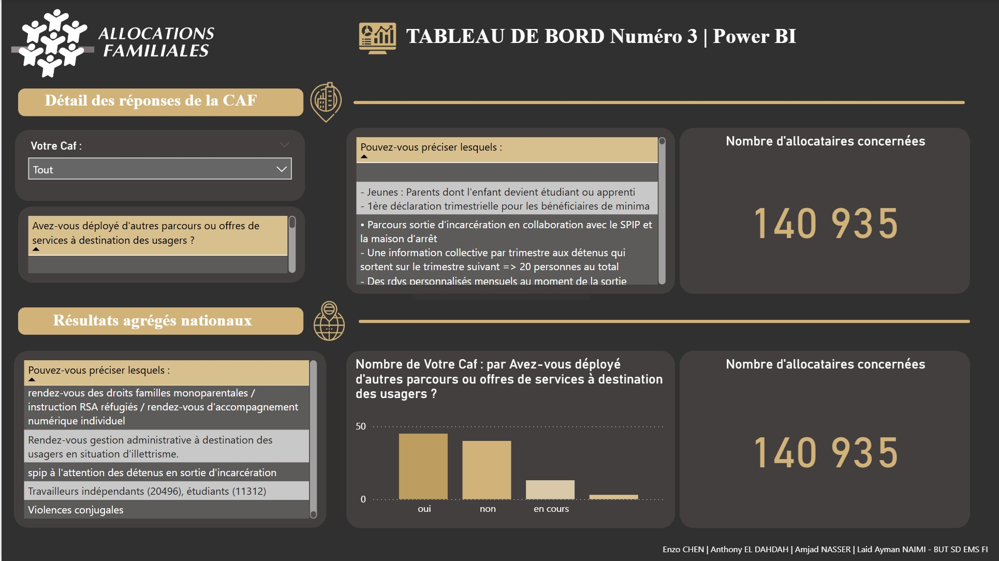
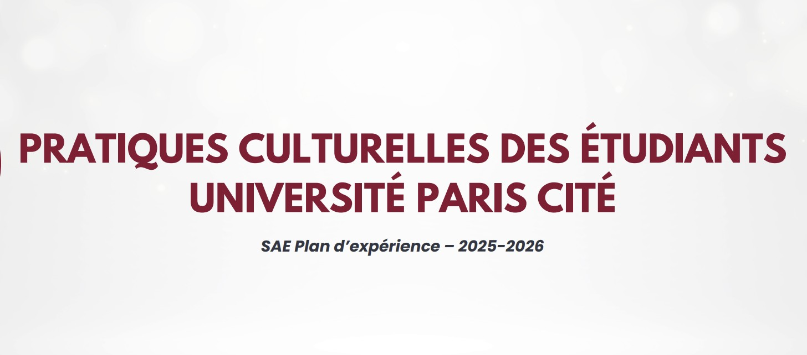
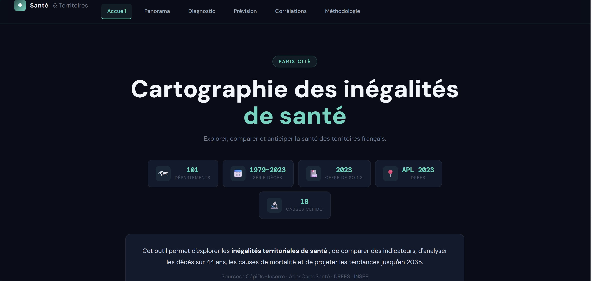

Expérience professionnelle
1 stage
Stage · En entreprise
En cours · Avril 2026

Eiffage Services
· Vélizy-Villacoublay, Yvelines (Siège social)
Migration de données pour mise en service de logiciel
Excel
Bases de données
ETL / Transformation
Tests d'intégration
Contexte
Déploiement d'un nouveau logiciel de gestion du Gros Entretien Renouvellement (GER) au sein d'Eiffage Services, dans le cadre de contrats PPP et MGP de long terme (hôpitaux, prisons, universités…).
Missions
Analyse des structures de données du logiciel GER, identification des sources existantes (tableurs, bases de données), définition des règles de transformation et création des fichiers de reprise sous Excel.
Attendu
Tests unitaires et d'intégration des fichiers de reprise. Validation de l'intégrité et de la pertinence des données avec les équipes métiers pour garantir une exploitation optimale du nouvel outil.
Projets académiques
6 projets
Image à venir
Projet 01 · BUT2
Reporting automatisé — Caisses d'Allocations Familiales
Extraction, transformation et visualisation d'indicateurs nationaux multi-sources.

Image à venir
Projet 02 · BUT2
Analyse des pratiques culturelles — Méthodes de sondage INSEE
Redressement statistique, calage sur marges et analyse sociodémographique.

Image à venir
Projet 03 · BUT2
Dashboard interactif — Santé & Territoires (R / Shiny)
Modélisation linéaire et exploration interactive des données de santé par département.
À compléter
Projet 04 · BUT2
Titre du projet 04 — À compléter
Description courte du projet — à renseigner.
À compléter
Projet 05 · BUT2
Titre du projet 05 — À compléter
Description courte du projet — à renseigner.
À compléter
Projet 06 · Stage / BUT1
Titre du projet 06 — À compléter
Description courte du projet — à renseigner.